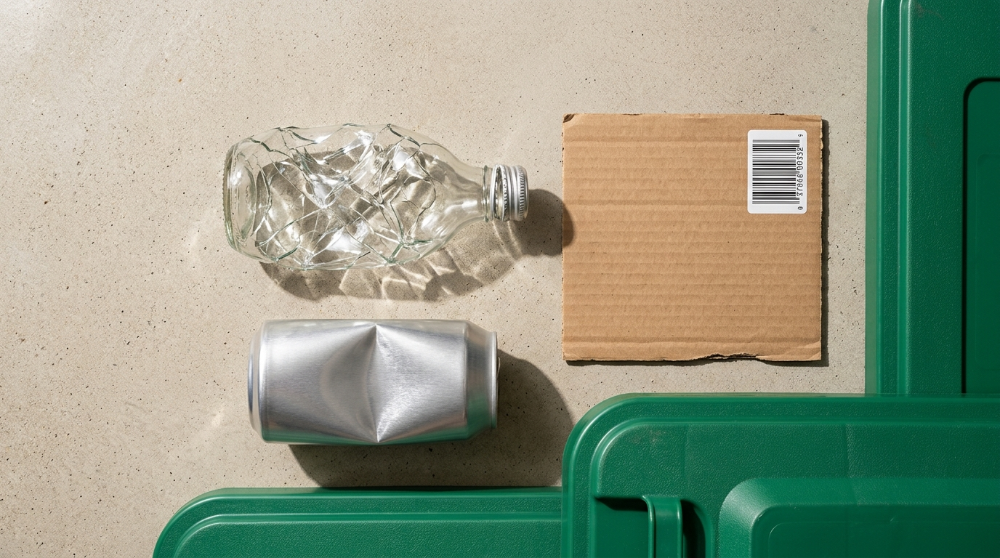

Stop wish-cycling at the curb. Verify what actually survives the optical sorter.
Crossing the city limit between Riverside (Republic Services and the county County Recycling Center on Blume Rd) and Houston (SWMD and Westpark) changes which plastics, yard bags, and foam blocks are accepted. Inspect any product by GS1 barcode, SPI polymer stamp, or physical contamination state before it jams a star-screen shaft.
- Demo barcode catalog
- 28 GS1 codes
- Polymer Mold Codes
- #1 - #7 SPI
- Material Profiles
- 17 Streams
- Ordinance Jurisdictions
- 2 Cities

Try it in three clicks
Inspection result
Virtual cart
Contamination calculator
Current itemPick any item above, then drag. Every number comes from the same rules engine and thresholds as the cart.
Batch CSV inspection
Columns: label, barcode, material, resin, condition. A header row is optional; without one, columns are read as barcode, material, resin, condition, label. Material uses ids like resin-1-pet or glass-jar-bottle. Lines starting with # are ignored. Rows BinCheck cannot identify are listed as errors and never guessed. The bundled sample is an illustrative synthetic dataset, not real household records. Ctrl+Enter (or Cmd+Enter) inside the box runs the inspection.
No batch yet. Load the sample or paste your own rows, then choose Run inspection.
Calibration benchmark
Not run yet. Run it to grade the engine in this tab against ground truth anchored to the city rules snapshot: cart routing, disposal streams, risk tiers, barcode check digits, and latency.
Municipal ruleset diff and diversion comparator
One basket of tricky household items, scored under two program profiles: the two real city snapshots (Riverside and Houston, from the bundled rules engine) and four illustrative archetypes. Rule-conflict alerts flag anything that is cart-accepted under one profile but contaminating under the other.
Wish-cycling and MRF hazard cascade lab
Feed up to 10 copies of each top contaminant into a load of 20 clean #1 PET bottles. Each deterministic stage engages at a fixed count: the same inputs always produce the same failure path. Sliders drive the physical failure modes documented at real materials recovery facilities.
Signed diversion audit export
Exports the current profile pair and basket as a signed audit: deterministic JSON, CSV (formula-injection safe) or Markdown, each carrying an HMAC-SHA-256 integrity tag computed in pure JavaScript. Paste a JSON export back below to replay it: any edited byte fails verification. The tag proves integrity, it is not a third-party certificate.
In-page self-tests
The same safety checks that run in the Node test suite, live in this tab: FIPS 180-4 SHA-256 known-answer vectors, the battery-never-curbside invariant under every profile and condition, diff determinism, diversion-rate bounds, cascade monotonicity, CSV escaping, and tamper detection.
Kitchen and garage sorting guide
| Household Item / Material | City of Riverside, TX (Republic Services) | City of Houston, TX (SWMD) | MRF Sorting Physics & Preparation Rule |
|---|---|---|---|
| #1 PET & #2 HDPE Bottles/Jugs | Recycle in Curbside Cart | Recycle in Green Cart | Empty all liquid so optical NIR air jets can eject containers accurately; keep loose. |
| #5 Polypropylene (PP) Tubs | Recycle in Curbside Cart (Clean) | Recycle in Green Cart (Clean) | Rinse dairy/food residue; discard foil peel lids in trash. |
| Clean Glass Bottles & Jars | Accepted in Curbside Cart | Accepted in Green Cart & Depositories | Remove metal caps (recycle separately). Never include broken glass, ceramics, or Pyrex. |
| Greasy Pizza Boxes | Tear Clean Lid for Cart / Trash Bottom | Tear Clean Lid for Cart / Trash Bottom | Pizza oil permanently weakens wet paper pulp; always tear off clean cardboard lids. |
| Plastic Grocery Bags (#4 Film) | Never in Cart (Retail Store Drop-Off) | Never in Cart (Retail Store Drop-Off) | #1 MRF shaft tangler. Return clean dry film to H-E-B, Kroger, or Target store kiosks. |
| #6 Polystyrene / Styrofoam | Clean Foam to county Drop-Off; Food Foam in Trash | Black Garbage Cart Only | county County Recycling Center (1200 Blume Rd) densifies clean #6 foam; never place in carts. |
| Yard Trimmings & Brush | Kraft Paper Bags / Cans (40 lb limit) | City-Logo Compostable Bags Only (50 lb limit) | Houston requires bags stamped with the official City biodegradable logo. |
| Lithium & Household Batteries | county County HHW Drop-Off Only | Houston Westpark / North ESC BOPA Only | Compaction punctures lithium cells, sparking MRF truck and facility fires. Tape terminals. |